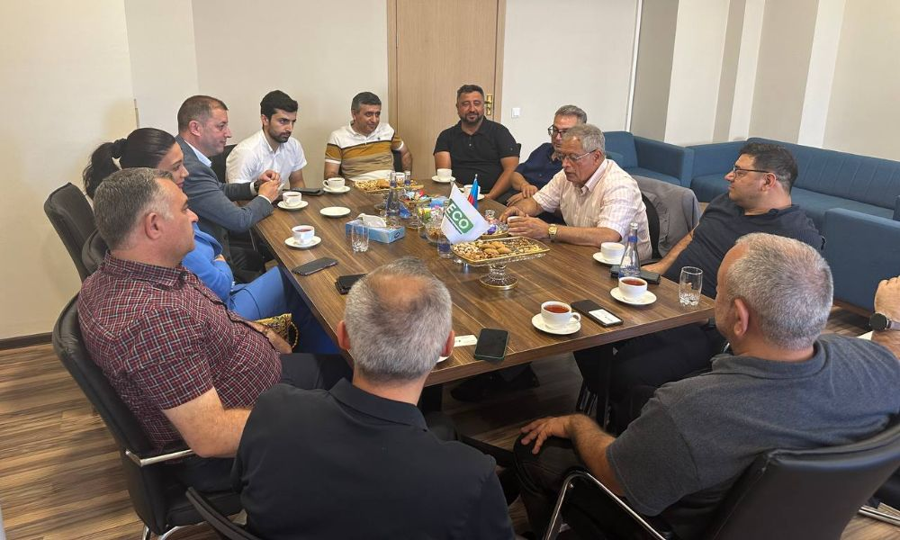
Event
Office visit-Networking company
Yesterday we visited the Eco Logistics & Waste management office. In order for the partner companies to become more familiar with each other's activities...
Read more →Founder Club events, business meetings and networking activities.

Yesterday we visited the Eco Logistics & Waste management office. In order for the partner companies to become more familiar with each other's activities...
Read more →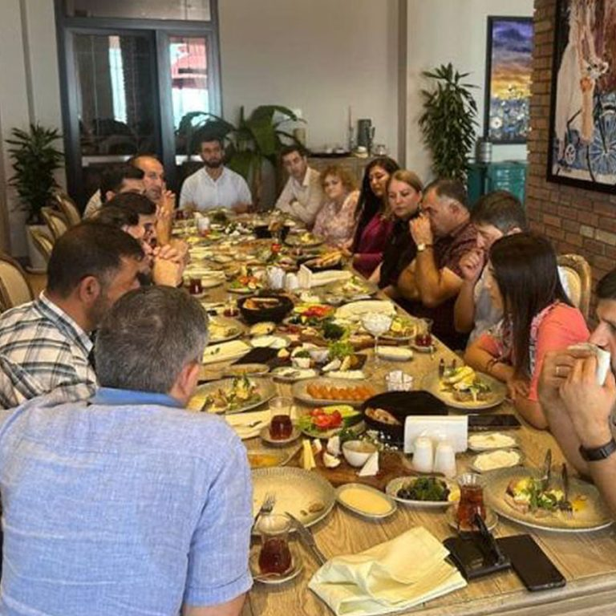
We visited Hill Restaurant last week. The head of the restaurant Mr. Fakhreddin welcomed the guests and gave information about the restaurant's activities. Later on…
Read more →
The other day we met at our partner restaurant @prive_steak_gallery. Businessmen talk about their activities for the development of new business relations...
Read more →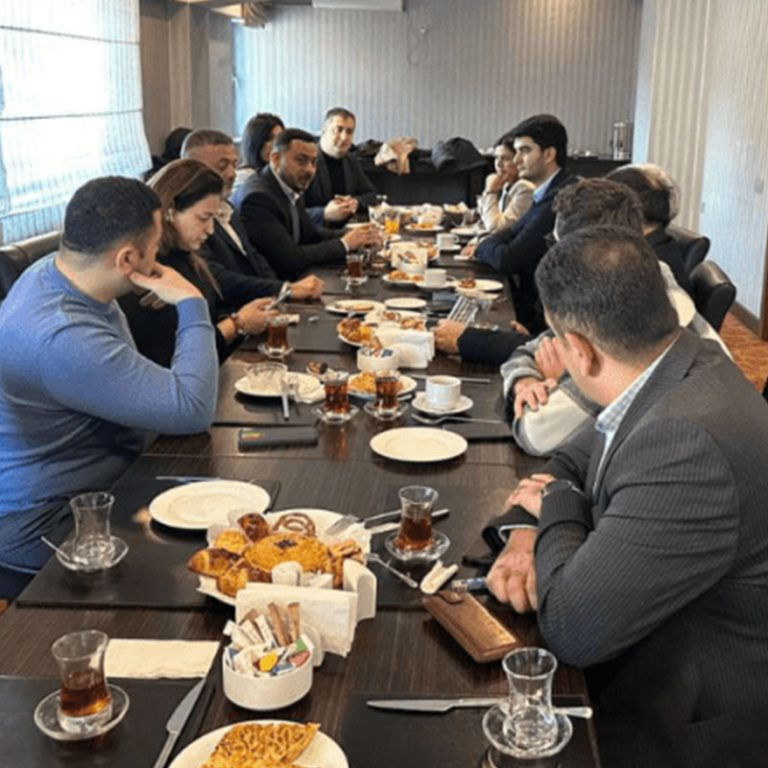
The other day we met at our partner New Baku Hotel. For the development of new business relations, businessmen talked about their activities, acquaintances...
Read more →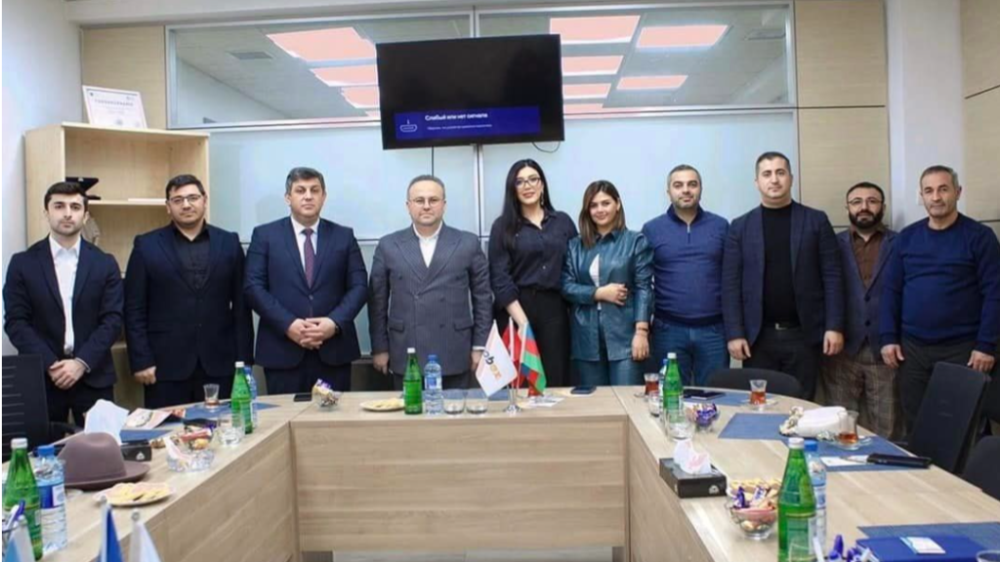
On January 18, we visited our partner Mobil Group as part of #OfficeVisit. The guests were welcomed by the head of "Mobil Group" Vusal Khalilov. Office…
Read more →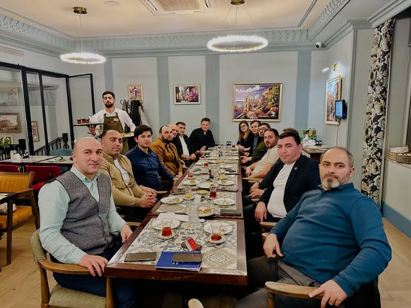
Iftar table with AZFILTER. We met with valuable representatives of the business world at the iftar table organized by @azfilter_mmc. New at the meeting...
Read more →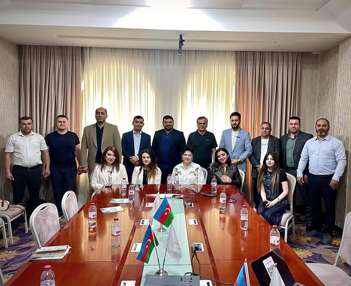
Useful training on "Sales team management"! Today at @safran_hotel_by_smart in Estonia as both an entrepreneur and a trainer...
Read more →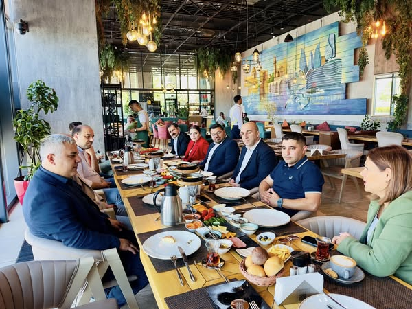
Meeting with business people at Kitchen Plus restaurant. We met with valuable representatives of the business world at the Kitchen Plus restaurant. During the meeting, new…
Read more →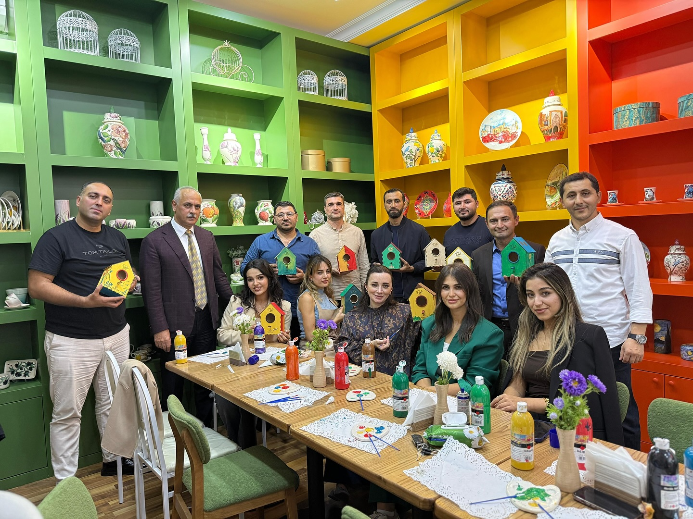
Unforgettable meeting with business people at @ozelartcoffee! This time we met with representatives of the business world at Özel, which has been operating since 2022. New…
Read more →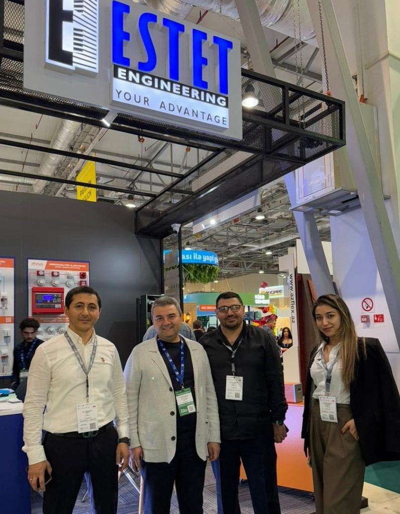
We visited the "BakuBuild", "Rebuild Karabakh", "Aquatherm Baku" exhibitions held at the Baku Expo Center. Within the framework of the exhibition, local and international...
Read more →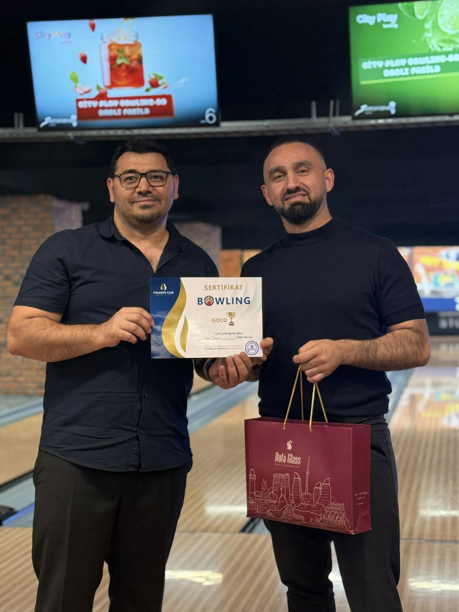
Founder Club Bowling Tournament – An Evening of Friendship, Competition and Fun! We had a great Bowling Tournament with Founder Club members. Excitement, laughter and…
Read more →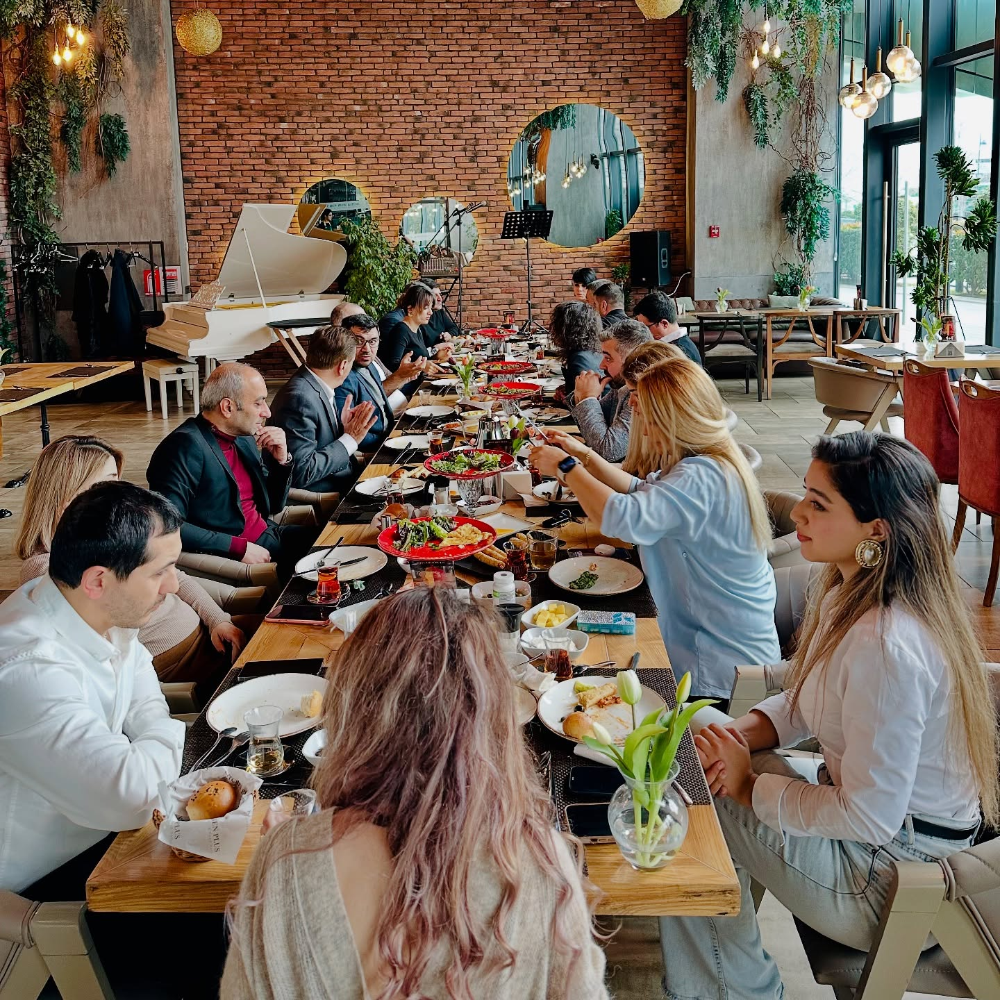
The meeting took place in a friendly and professional environment. Businessmen made new acquaintances and exchanged experiences. Participants potential cooperation…
Read more →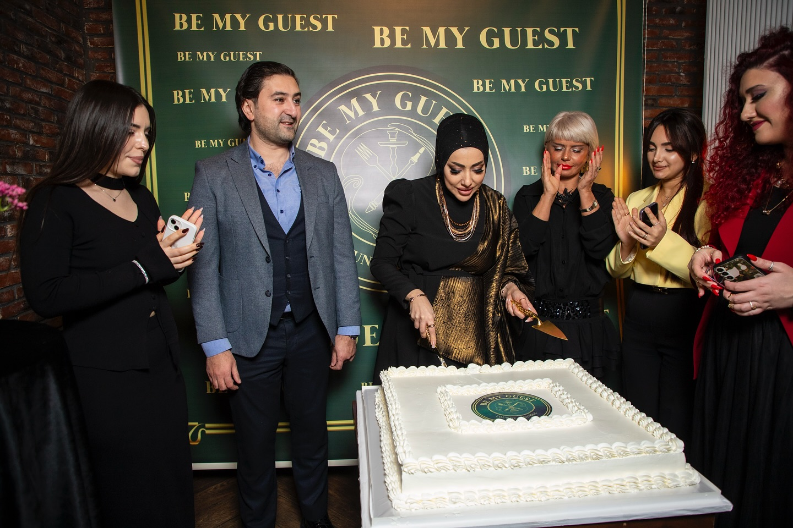
We heartily congratulate our partner Mr. Orkhan on the opening of the newly opened "Be My Guest" restaurant. Worth around 40…
Read more →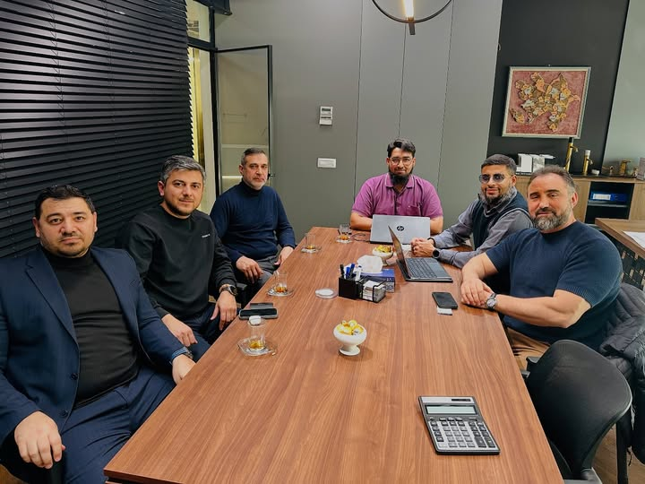
Another international meeting was held between Rich Interior and businessmen visiting Azerbaijan from Dubai under the organization of Founder Club. Meeting...
Read more →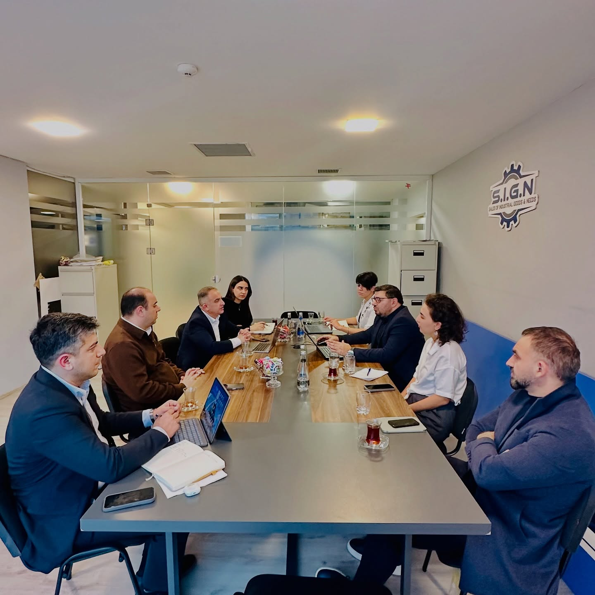
TEI Forum 2026 – Preparations Started. Preliminary meetings regarding the structure and format of TEI Forum 2026, which will take place in October 2026...
Read more →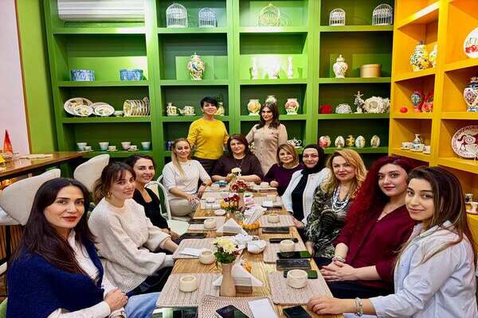
We got together, got to know each other, had fun together. At our meeting organized by @founderwomen_club at @ozelartcoffee, ladies first...
Read more →